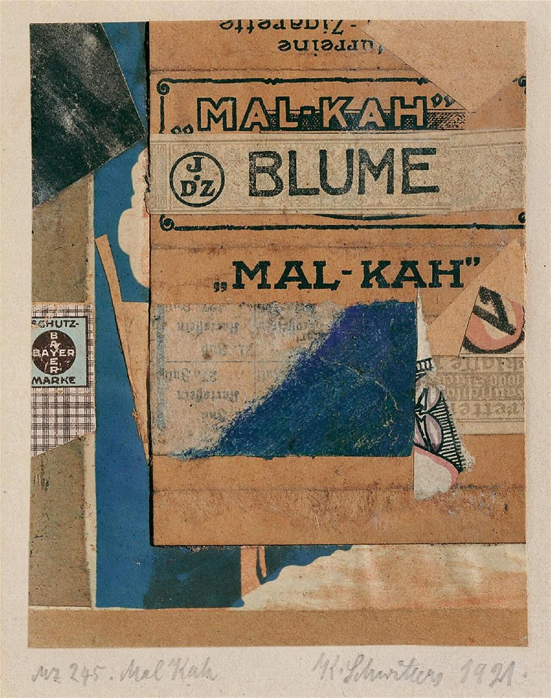

References / Illustration / 443
Kurt Schwitters, Mz 245. Mal Kah, 1921
A small Merz collage built from cigarette packaging, a Bayer label, a ticket, and painted paper, with the brand names left as type.
- Source
- Lempertz, sale 877, lot 1062: Kurt Schwitters, Mz 245. Mal Kah. Merzzeichnung
- Creator
- Kurt Schwitters
- Made
- 1921 (signed and dated)
- Style
- Dada (agent-proposed, not yet reviewed by a person)
- Moods
- Raw, playful, experimental
- Evidence
- Inspected the Commons image taken from the Lempertz auction catalogue (Commons, 3353 × 4250 px original, viewed at 1200 px). The Lempertz page itself was not opened. The current owner is not known.
- Reviewed
- Rights
- Open license, stored. License: public domain. Rights policy

Context
Commons, after the Lempertz catalogue, describes the work as “Mz 245. Mal Kah. Merzzeichnung”: collage of colored and printed papers, card, and colored chalk on paper, 12.6 × 10 cm, mounted on card 23.4/23.8 × 18 cm, signed and dated K. Schwitters 1921, catalogue raisonné Orchard 83. Commons.
Schwitters called his collages Merz, after a fragment of found text from the phrase “Commerz und Privatbank”. Wikipedia: Kurt Schwitters. Compare his magazine Merz 1 and the cover of Anna Blume.
Observed
- A cigarette label with “„MAL-KAH“” in black bold slab-serif capitals, framed by thin ornamental rules, fills the upper middle. A second “„MAL-KAH“” appears below it.
- A strip with a circled monogram “J D Z” and “BLUME” in a plain heavy grotesque lies across the first label.
- At the top a fragment reads “…urreine Zigarette” upside down.
- At the left are a round “BAYER” cross mark on a label reading “SCHUTZ-MARKE”, a piece of checked paper, a black-grey wedge, and a strip of blue paper.
- A patch of deep blue chalk covers part of a printed ticket or form with Fraktur text. Small cut pieces at the right show a black and pink letter and an ornamental print.
- The pieces are mostly rectangles and triangles with straight cut edges. The colors are brown card, cream, black, and blue. The signature “Mz 245. Mal Kah” and “K. Schwitters 1921.” are in pencil on the mount.
Why it belongs
The collage shows how Dada makes type from printed waste: brand names, a trademark, and a ticket keep their own faces and are cut and layered at angles. The upside-down fragment and the clash of slab, grotesque, and Fraktur letters echo the typographic sheets.
Borrow
Build a heading area from fragments of real labels, each keeping its own face, and overlap them at slight angles.
Use one strong blue patch as the only saturated color in a brown and cream field.
Measured
Machine-extracted by tools/image-traits.py on . Full measurement.
- Mean chroma
- 0.21
- Palette
- #ab784e 19%
- #d7c9b9 17%
- #b69d80 14%
- #b98f69 6%
- #2c5870 5%
- #153848 4%
- #363c33 3%
- #887053 3%

